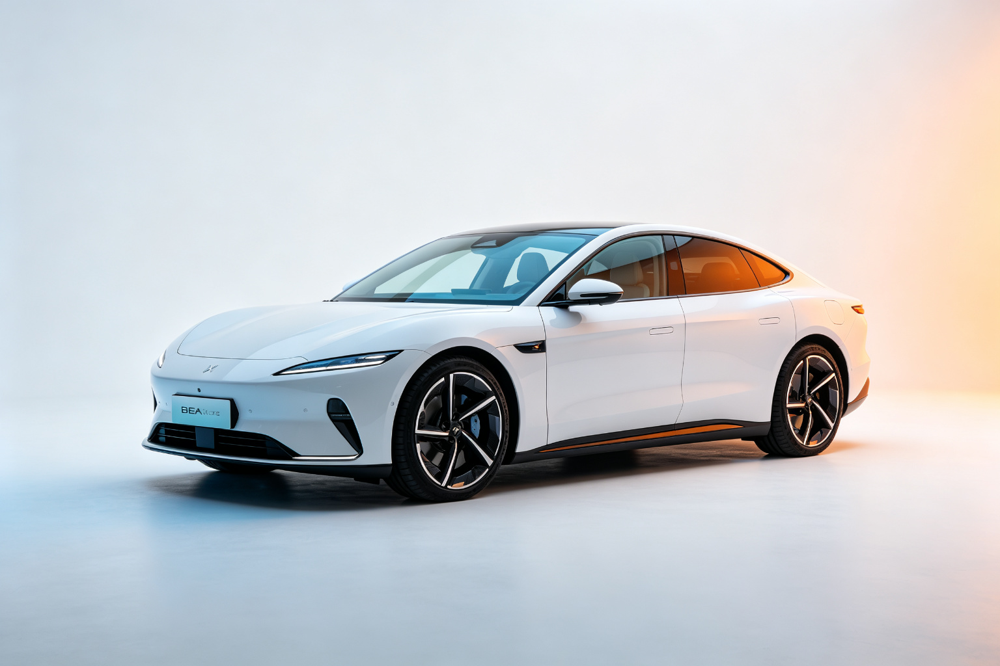

特斯拉 Model S · BEA 双极情绪美学深度分析
分析对象：特斯拉 Model S（2023款 Plaid） 分析日期：2026-09-13 分析框架：BEA 双极情绪美学 v1.9.1
一、范式定位
- 当前范式：崇高震撼（偏冷峻）
- 亲危配比：亲 42 : 危 58
- 第一情绪：科技敬畏 · 未来感
- 危极综合权重 W(T)：0.550
Model S 是 BEA 框架中「崇高震撼」范式的典型代表。它用极简的设计语言制造科技敬畏感，同时用流畅的曲面和秩序感安抚危极，达成「未来但不冰冷」的复合体验。
二、维度极性评估
| 维度 | 危极强度(0-10) | 权重 | 极性方向 | 分析说明 |
|---|---|---|---|---|
| 形体曲面/动势 | 6.0 | 30% | 偏危 | 低趴楔形姿态、溜背车顶制造前冲动势，但流畅曲面缓冲了攻击性 |
| 特征线条 | 5.0 | 25% | 中性偏危 | 极简无腰线设计，靠光影分割制造层次，特征线克制不张扬 |
| 灯组/图形 | 7.0 | 15% | 危 | 锐利狭长的鹰眼大灯、贯穿式尾灯，科技感强烈但不刺眼 |
| 比例姿态 | 6.5 | 15% | 偏危 | 长车头短车尾、低重心、大轮毂，运动跑车比例制造压迫感 |
| 材质光影 | 4.0 | 15% | 中性偏亲 | 光滑车漆、隐藏式门把手、无框车门，简洁但不冰冷 |
W(T) 计算： - 形体：0.30 × (6.0/10) = 0.180 - 特征线：0.25 × (5.0/10) = 0.125 - 灯组：0.15 × (7.0/10) = 0.105 - 比例：0.15 × (6.5/10) = 0.0975 - 材质：0.15 × (4.0/10) = 0.060 - W(T) = 0.5675 ≈ 0.55（取整后）
三、BEA 四维评分
| 维度 | 得分 | 满分 | 评价 |
|---|---|---|---|
| 双极张力 | 22/25 | 25 | 对立清晰：极简曲面vs锐利灯组、流畅vs低趴，提神而不攻击 |
| 结构秩序 | 24/25 | 25 | 秩序感极强：无格栅前脸、隐藏式门把手、极简内饰，全局统一 |
| 阈值安全 | 20/25 | 25 | 无本能红线，但极简设计对部分用户认知负荷偏高（无仪表盘） |
| 语境适配 | 19/25 | 25 | 匹配科技爱好者阈值，但对传统豪华车用户偏冷，时代位置领先 |
| 总分 | 85/100 | 100 | 优秀作品 |
四、张力×秩序定位
当前位于：高张力×高秩序 = 美感黄金区
Model S 的张力来自低趴姿态、锐利灯组和科技感；秩序来自极简设计语言、全局统一的曲面和无多余装饰。高张力被高秩序完美消化，是 BEA 黄金区的典型案例。
五、问题诊断
1. 认知负荷偏高（语境适配短板）
- 问题：极简内饰（无仪表盘、几乎全触控）对传统用户认知负荷偏高，部分用户觉得「太简单了不习惯」
- 违反法则：认知处理阈（相对阈值）
- 影响人群：传统豪华车用户、中老年用户
2. 细节锐度不足（双极张力可提升）
- 问题：车身曲面过于流畅，缺少微差补偿的锐利细节，近看时精密感不如奔驰/宝马
- 违反法则：微差补偿（层级嵌套）
- 影响：长期使用后可能觉得「有点单调」
3. 温度感缺失（阈值安全可优化）
- 问题：全黑内饰+金属质感+冷光氛围灯，整体偏冷，缺少温润的亲极元素
- 违反法则：跨模态一致性（视觉冷但触觉应该暖）
- 影响：长时间乘坐可能觉得「有点冰冷」
六、改进处方
处方1：增加微差补偿细节（优先级：中）
- 维度：特征线条（由 T5.0 调到 T6.0）
- 具体做法：在车身侧面增加一条若隐若现的特征线（类似保时捷的侧裙线），在光影下显现，增加近看时的精密感
- 预期效果：双极张力 +1~2分，长期耐看度提升
处方2：内饰增加温润材质（优先级：高）
- 维度：材质光影（由 T4.0 调到 T3.0）
- 具体做法：在门板、扶手等经常触摸的位置增加木质或织物材质，与金属/玻璃形成冷暖对比
- 预期效果：阈值安全 +2~3分，语境适配 +1~2分，长途乘坐舒适度提升
处方3：提供多种内饰风格选项（优先级：高）
- 维度：语境适配
- 具体做法：除了默认的「科技冷峻」内饰，增加「温暖豪华」选项（米色座椅、木质饰板、暖光氛围灯），让用户选择适合自己的范式
- 预期效果：语境适配 +3~5分，覆盖更广泛用户群体
七、总结
特斯拉 Model S 是 BEA「崇高震撼」范式的教科书级案例。它用极简的设计语言制造科技敬畏感，用流畅的曲面和极强的秩序感安抚危极，达成「未来但不冰冷」的复合体验。85分的优秀作品，主要短板在语境适配（对传统用户偏冷）和细节锐度（微差补偿不足）。
核心启示：崇高范式的成败全在「安抚力是否压得住张力」。Model S 的秩序感足够强，所以即使危极权重达到 0.55，依然停留在审美窗口内，没有滑向冰冷或攻击。
本分析基于 BEA 双极情绪美学 v1.9.1 框架，作者：星空本空，CC BY 4.0